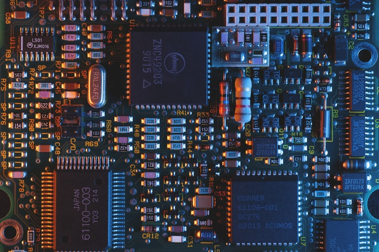
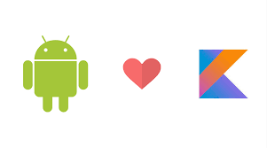

INTERNET OF THINGS

This is all about the network of objects(things) that
are bedded with sensors ,artificial colours ,software and
metalic technology for the purpose of exchanging data
with other devices over the internet.
INDUSTRIAL DESIGN

A process of design applied to products that are to be manufactured
using mass production.Design precedes manufacturing.All
manufactured products are a result of a design process.
UX RESEARCH

This the research on how userd feel or think about a product after
or when thinking about using it
PYTHON
This is an open source programming language invented by Guido
Van Rosun in 1991.It is a loosely typed language thus has a
large online community It is used by many large companies.
JAVASCRIPT
It is a frontend programming language that is used to give web pages
interactive elements.It enables websites to work the way they do.
Some keywords are var,let and const.
KOTLIN

This is a programming language used in developing android apps.
It is a modern statically typed programming language used
by over 60% of professional Android developers that helps boost
productivity, developer satisfaction, and code safety
PROFFESIONAL DEVELOPMENT
Here we look at the work environment especialy in the tech industry
We look at different skills that we should have to help us thrive in the
work place .
NAVIGATING YOUR JOURNEY
Here we look at how to handle different challenges as we take on this
of technology .We recognise it is not eaasy but we learn on hoe we
can develop defferent life skills to make the journey and transition
easier.
STARTUP 101
A startup is a young company founded by one or more entrepreneurs
to develop a unique product or service and bring it to market. By
its nature, the typical startup tends to be a shoestring operation
with initial funding from the founders or their friends and families .